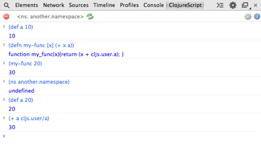
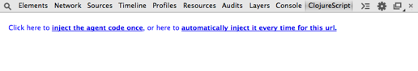
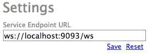

ClojureScript REPL for Google Chrome DevTools
Ascent REPL is a Chrome extension that adds ClojureScript read-eval-print loop UI panel to Chrome Developer Tools (DevTools). It is a part of a bigger project that is not released yet - stay tuned. :)

After installing the extension you can immediately access it from DevTools. It will ask you if you want to inject small piece of JavaScript code into the page. This code comminicates will UI panel, evaluates compiled JS statements, creates and updates namespaces.

If the page does not containt cljs.core namespace - it is still possible to inject the agent. In this case cljs.core and it's dependencies will be also injected. You can use Ascent REPL to interact with any web page, not only implemented in ClojureScript.
You can switch namespace with (ns ...) statement. If namespace does not exist it will be created and all functions from cljs.core will be imported into it.
You can dynamically re-load namespace contents with the button. If you click on it, all existing content from the current namespace will be removed. After that, corresponding .js file will be re-loaded. This feature is experimental - please let us know how it works for you.
Ascent REPL uses server back-end which compiles ClojureScript to JavaScript. Currently it is publicly available at ws://ascent-server.suprematic.net/ws .
Add the following plugin dependency to your project.clj file.
:plugins [[ascent.server "0.2.0-SNAPSHOT"]]
$ lein ascent :port 9093
Go to the settings window and change Service Endpoint URL:

Please not that because Ascent REPL uses web sockets for communication, you should use ws:// schema. Also keep in mind that you will have to close and re-open DevTools to apply the change.
Ascent REPL is implemented in ClojureScript with very small fragments of pure JavaScript code. It heavilly uses core.async for internal messaging. Visible parts are done with om. We also use chord for server communication.
Both client and server parts are hosted on GitHub. Contributions are welcome.
Created by Alexey Aristov of SUPREMATIC. Several ideas are contributed by Serge Vasilliev. Special thanks to Andrew Kosyakov from Google Chrome DevTools team for his help and support.
If you have questions or need help - you can contact me at aav {no_spam} suprematic.net.
Updates and news will be pubslished on twitter under @suprematic_aav - please follow